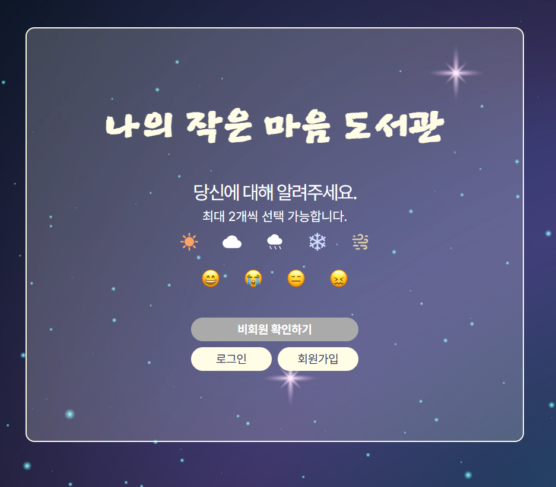
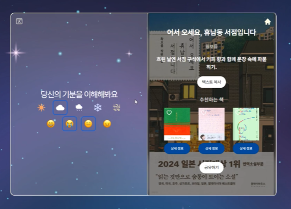
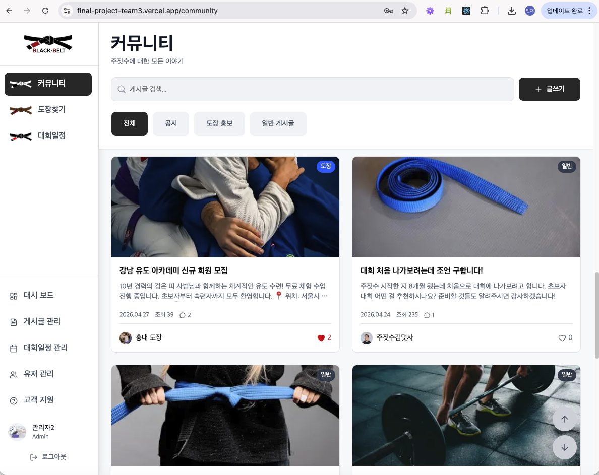
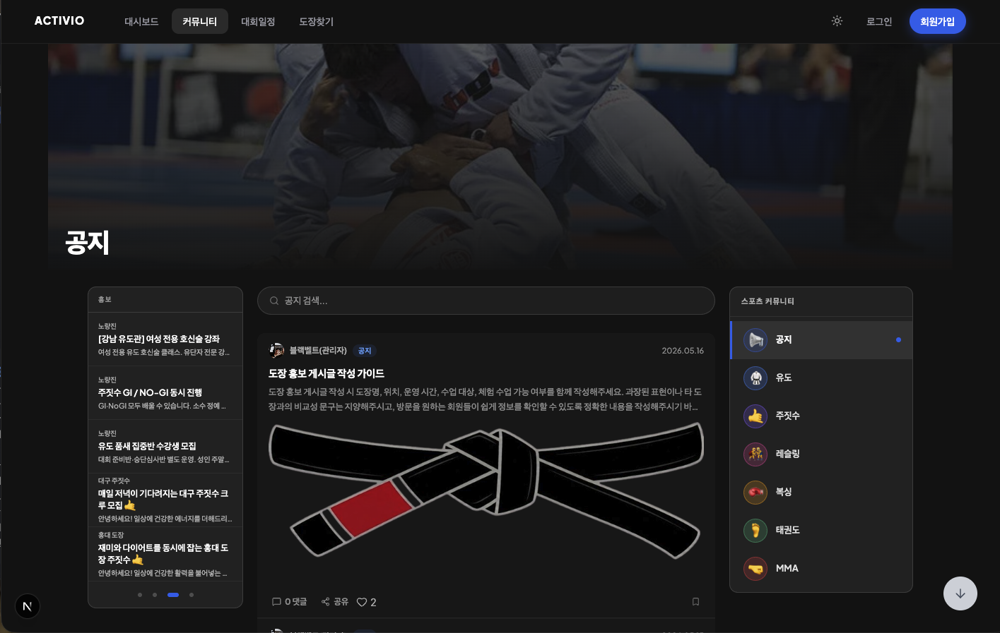
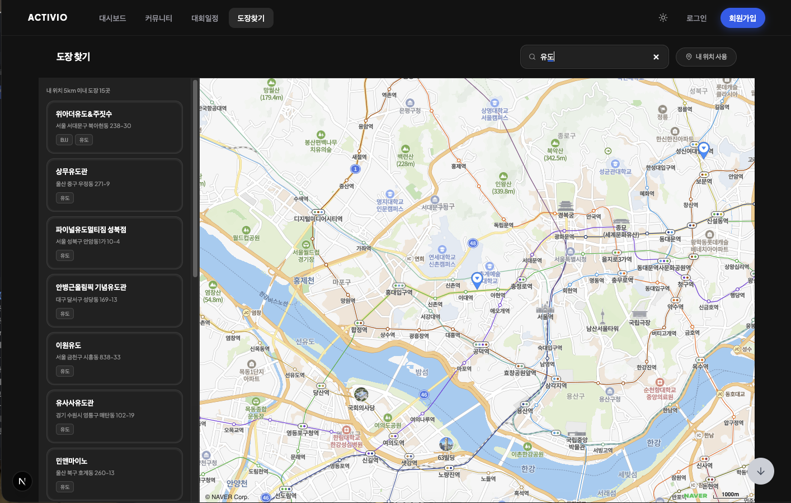
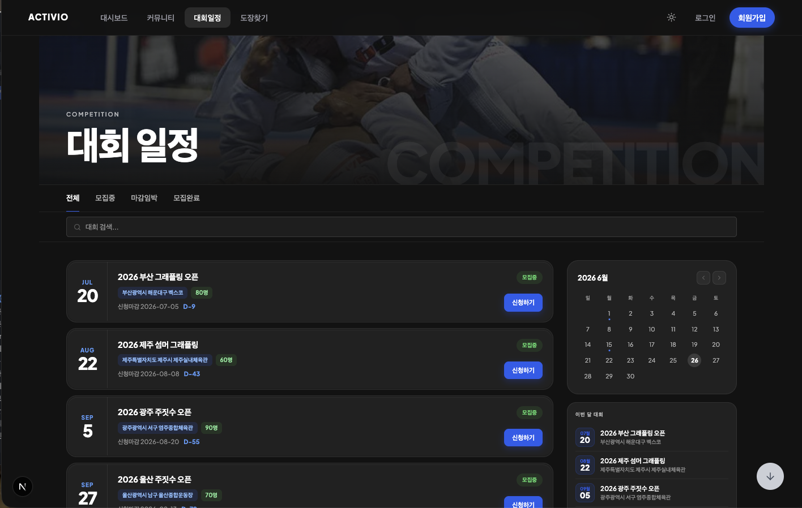
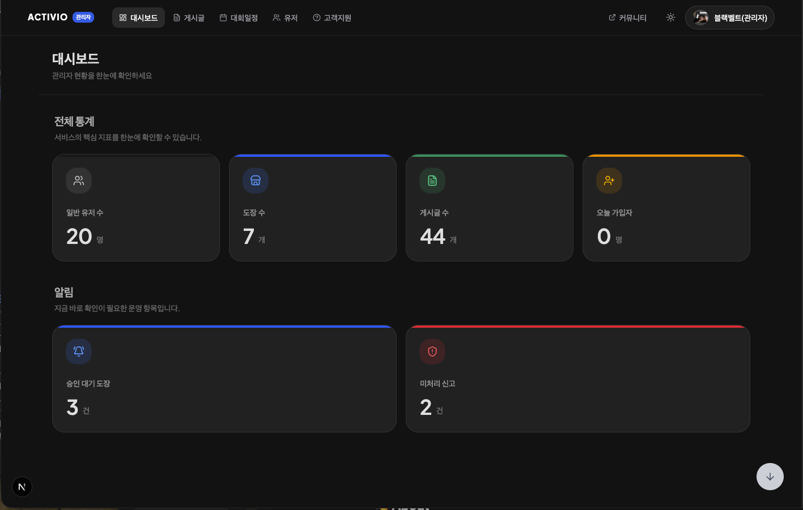

Frontend Developer
사용자의 불편함을 지나치지 않고, 직관적이고 매끄러운 UI/UX를 구현합니다.
협업 과정에서 코드가 꼬이거나 데이터가 어긋나는 순간마다, 문제를 구조적으로 나눠서 다시 짜는 걸 좋아합니다. 관심사를 분리하고 역할을 명확히 할수록 유지보수가 쉬워진다는 걸 실제 트러블슈팅을 거치며 체득했습니다.
최근에는 서비스가 확장될 때 UI가 무너지지 않도록 접근성과 성능을 함께 챙기는 데 집중하고 있습니다. 사용자가 눈치채지 못하는 곳까지 매끄럽게 다듬는 일이 제 역할이라고 생각합니다.
사용자가 고른 날씨와 기분에 따라 어울리는 문학 문장을 추천하는 웹 서비스입니다. 프레임워크 없이 HTML, CSS, JS만으로 상태 관리와 API 연동을 직접 구현했습니다.


주짓수 수련자만을 위해 만들었던 블랙벨트는 사용해볼수록 한계가 분명했습니다. 무술 종목마다 커뮤니티가 흩어져 있고, 도장을 검증할 방법이 없다는 문제는 주짓수만의 문제가 아니었습니다. 팀은 서비스 범위를 유도, 레슬링, 복싱, 태권도, MMA까지 넓힌 Activio로 다시 설계했고, 저는 이 과정에서 접근성 개선과 캐싱 최적화, 리디자인을 맡았습니다.





use cache와 cacheTag로 정적 캐싱하고, 인증이 필요한 데이터는 Suspense 스트리밍으로 분리하는 구조에 참여했습니다.